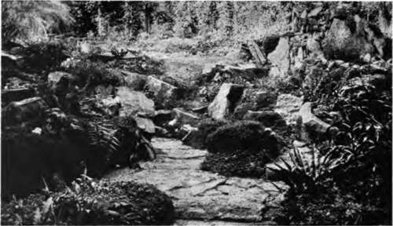
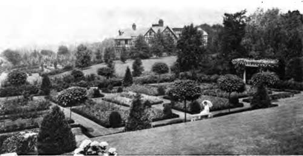
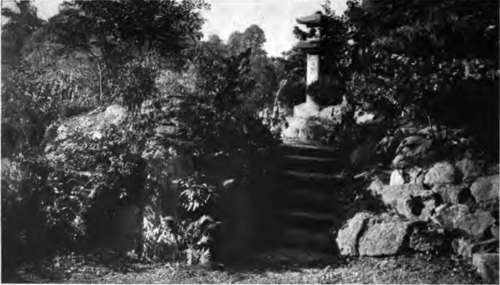

Flower Gardens Of Many Kinds. Part 3
Description
This section is from the book "Flower Gardening", by H. S. Adams. Also available from Amazon: Flower gardening.
Flower Gardens Of Many Kinds. Part 3
Lilies, both the true and the false; primroses, for spring only; speedwells, pinks, bellflowers, daisies and mallows are also well adapted for named gardens.
It is less trouble to buy herbs nowadays than to grow them. Nevertheless a great many more would grow them if they realized the pleasure to be derived from an herb garden. This, indeed, may be made a most delightful retreat as well as a valuable kitchen adjunct. In foliage alone there are enough shades of green and gray to contrive all manner of pleasing pictures. And it is pleasant for the clothing to brush against mint, and burnet and other savories.
For flower color the common calendula, which is a very old pot herb, will give various yellow shades from early summer until well into the autumn. The blue of the common sage blossoms is very soft and pretty and there are the still softer tones of lavender and rosemary—herbs that unfor tunately are very tender in the North. And some of the other subdued hues, such as the red of the flower heads of the burnet and the greenish yellows of the fennel and dill umbrellas, are grateful to the eye. Then there are the little golden buttons of the tansy, which should be in every herb garden because the fresh leaves laid on the pantry shelves will keep black ants away.
In the Dark Ages the monks had medicinal gardens that were agreeable to walk in, aside from their primary reason for being. A medicinal gar den nowadays would scarcely sound right excepting as a reserved space in a botanic garden. Yet the garden of simples, which is the same thing is a too-cherished memory of an age when life was less complicated to be wholly neglected where there is room for it as a special retreat. There would be no obligation, even on the part of a New England conscience, to go "simpling" in it; the owers properly entering into it would make it a gay enough place in which to ramble for the sheer joy of beholding. Any of the "worts," which are legion, may go into it, and there will be blossoms from the coltsfoot of March to the monkshood of October.
The rock garden, fairly common abroad but rare here, is in the narrow sense of alpine an endeavor to make the plants of the high mountains at home by approximating natural conditions.
"A rock garden is a semblance of nature. . . . And it can be entrancingly beautiful without the employment of any plants but some of the iron-clad perennials".
When termed a moraine garden, a miniature slope of fine stones is made for alpine dwarfs that do not thrive well in pockets of soil. Broadly speaking, a rock garden is a semblance of nature, which 'may be no more than the mere planting of native flowers by existing rocks. One great advantage of it is that it need be only a yard square and still be what it pretends to be; there are many tiny ones in England. And it can be entrancingly beautiful without the employment of any plants but some of the "iron-clad" perennials.
A wall garden is not to be confused with a walled garden. It is any wall in the crevices of which are grown appropriate plants. The mortar may be knocked out here and there in an old wall, but it is better to make a dry one—that is to say, one in which the crevices are filled with earth for planting. It is a large or small undertaking, according to desire and circumstance; nothing could be simpler than a simple one.
The water garden is a sufficiently expansive term to cover plants that like "wet feet" as well as those that actually grow in the water; for that matter it may be made up of either, the water being the essential thing. As for pretentiousness, a tub of water sunk in the ground and a single water lily growing in it, with a bit of perennial forget-me-not flourishing in the adjacent moist soil, is a water garden that is not to be sneered at; the birds will tell you that by their actions, if they cannot in so many words.
A bog garden is a wet one, more or less faithfully reproducing boggy conditions. It is just the place for segregating some of the orchids, ferns and other native plants that otherwise are liable to perish in cultivation, or at best grow only halfheartedly. It may be also a peat garden, or just the moîster section "of one—the remainder to be higher land for rhododendrons, heather, lilies and other peat-loving plants.
Of what may be called sentimental gardens there are doubtless more kinds than will ever be numbered, because any one is likely to extend the list through purely personal promptings of the heart. The best for general recommendation is the garden of friendship. All of the plants in it, of course, are from friends or from seed sent by them; and it is astonishing to find how many are only too glad to contribute. Long-lived, hardy plants ought to be given the preference.
A garden of association might mean this, too; but a wise differentiation is a gathering together of plants—personally and through friends—that come from places of historical and literary interest. Shakspere, Bible and Virgil gardens are among the possible specializations, though all offer obstacles to completeness that few would find surmountable. Enough for most will be to visualize "Daffodils that come before the swallow dares" or some of the other easy references.
"If the borrowing and adapting of ideas is judicious, the garden will have a personal character—in nine cases out of ten better than a slavish imitation".
The name garden has occasional possibilities that have not begun to be recognized. Rose and Violet may choose either the flower or the color for theirs. Daisy is perhaps not less fortunate in the variety of "day's eye" flowers that extend over the entire season. And there is Lily, with glorious opportunities from May to September. If there be but contentment with one or two kinds of flowers, several other feminine names, and perhaps as many masculine ones, may be coupled with gardens. Is it too small a thing to bestow the name of Mary's garden on a generous planting of "blue-eyed Mary" and "sweet Mary," or Susan's garden on a grouping of the two flowers known as "black-eyed Susan" ? Surely there would be something in them to Mary or Susan that an acre of roses would lack—even though there were not a precise matching of eyes.
color gardens are more dreamed of than realized. Yet they offer a most fascinating field that would not seem hedged in with trials and tribulations if the first thing to remember were not usually overlooked. It is this: there is no statute on the books requiring a pink garden, for example, to be all pink. How soon the eye would tire were there not the green of the leaves; and if the color why not a touch of white ? The only rule is to have the name color dominant, and no more so than you fancy. White always is a refreshment and a bit of yellow warms up a blue garden. A red garden ought not to be too red, as this is a hot color in summer; use winter berries and evergreen foliage in generous measure. By skillful planting the garden may be four or five colors in succession. In that event, yellow is a warm color for spring.
The old-fashioned garden is a somewhat confused term. It may mean a formal Colonial garden or a garden having only the flowers of other days, with little or no color and planting order. Either interpretation will answer—in its place. But do not worry yourself to death trying to find out where the old-fashioned flowers begin and the new ones end; it is a hopeless task. If the garden looks old-fashioned, or Colonial, a few anachronisms will not matter a great deal.
There are also two kinds of wild gardens, real ones and crazy ones. The latter are the product of the pernicious habit of mixing various flower seeds together and scattering them broadcast to come up as best they may. The real kind is a bit of the wild brought to the home. It offers no end of attractive possibilities, especially where there is adjacent woodland and conditions may be adapted instead of being created.
Finally, there is the fruit garden—which first is a flower garden, yet seldom figuring in that light. Now that there are all manner of dwarf fruit trees, enchanting spring pictures are to be made. Though the fruit is highly decorative later, there are spaces where flowers may bloom all summer.
In early spring the fruit garden may be brightened with various bulbs.
"If a pedant chooses to call the resultant garden Japanesque rather than Japanese, let him".
Continue to:
- prev: Flower Gardens Of Many Kinds. Part 2
- Table of Contents
- next: Chapter III. Laying Out The Flower Garden